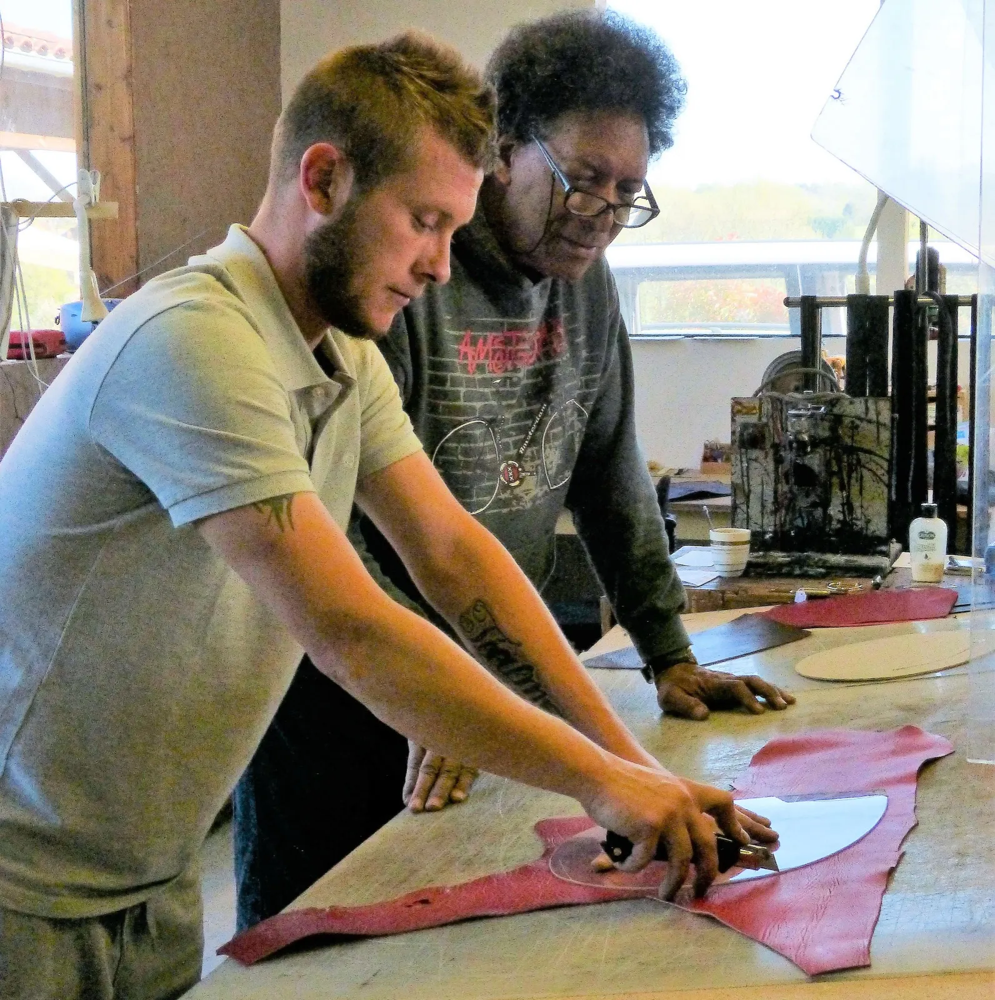
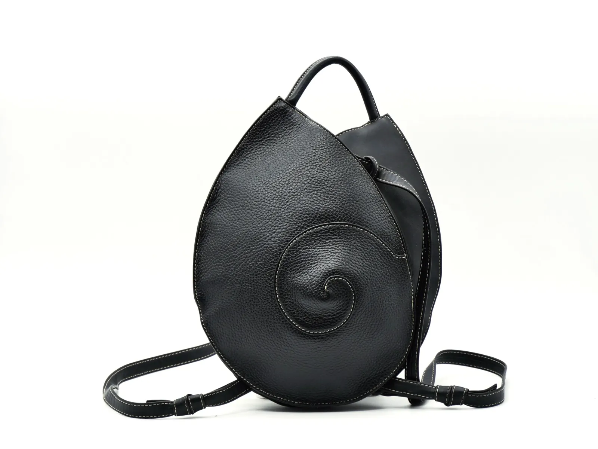
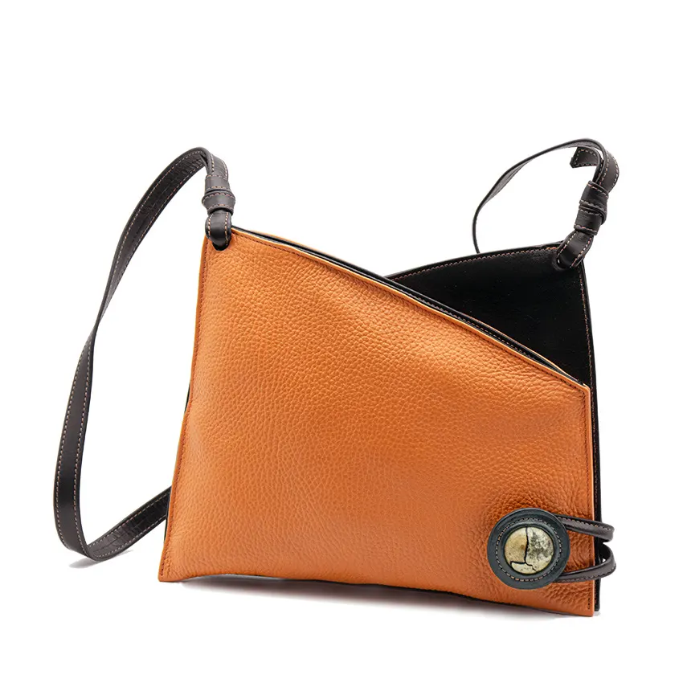
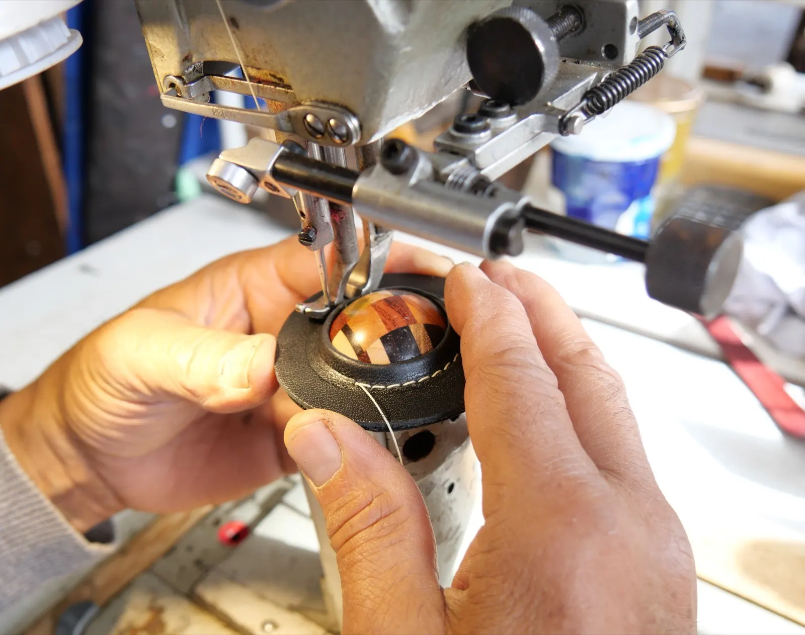
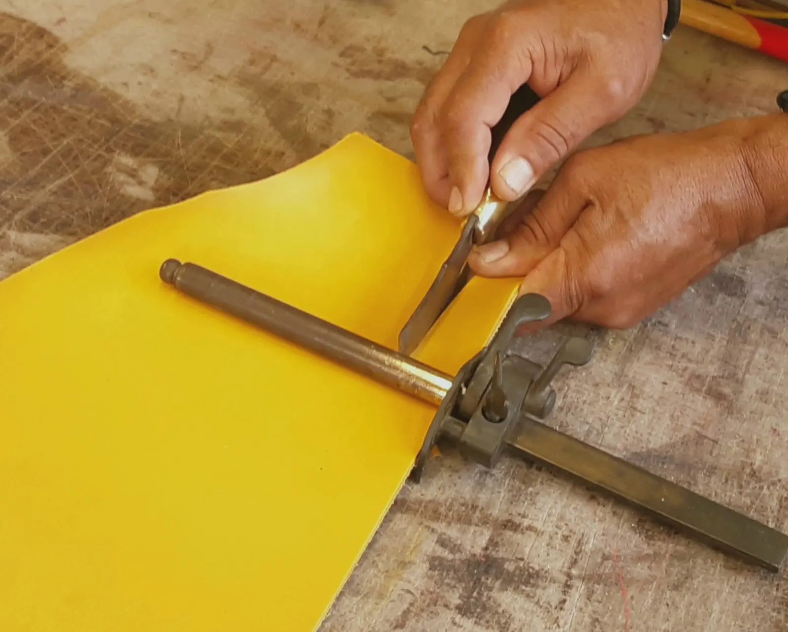
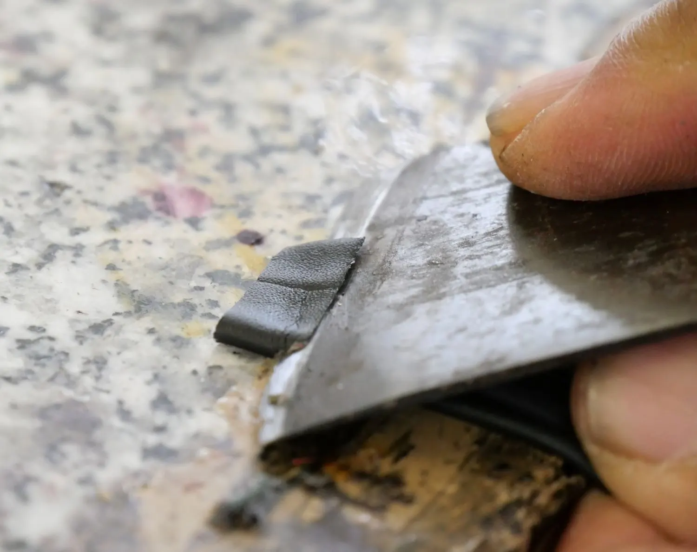
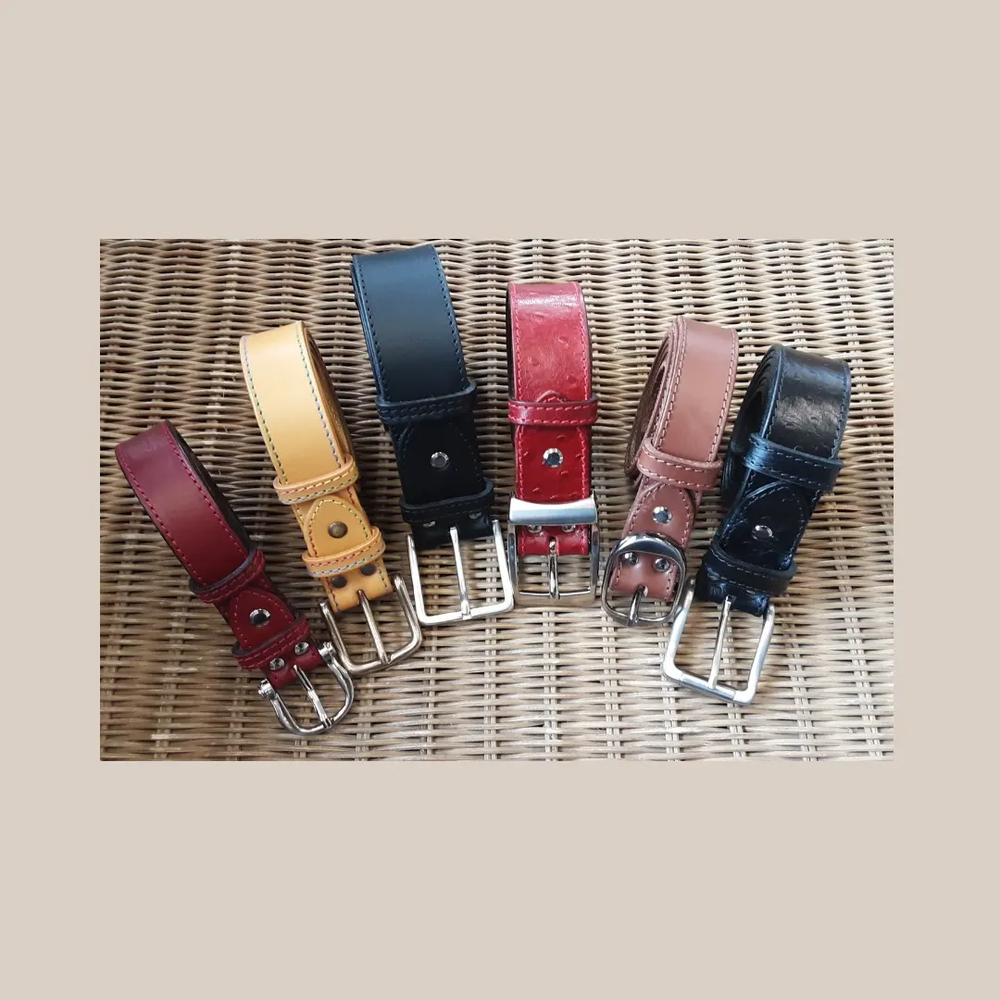
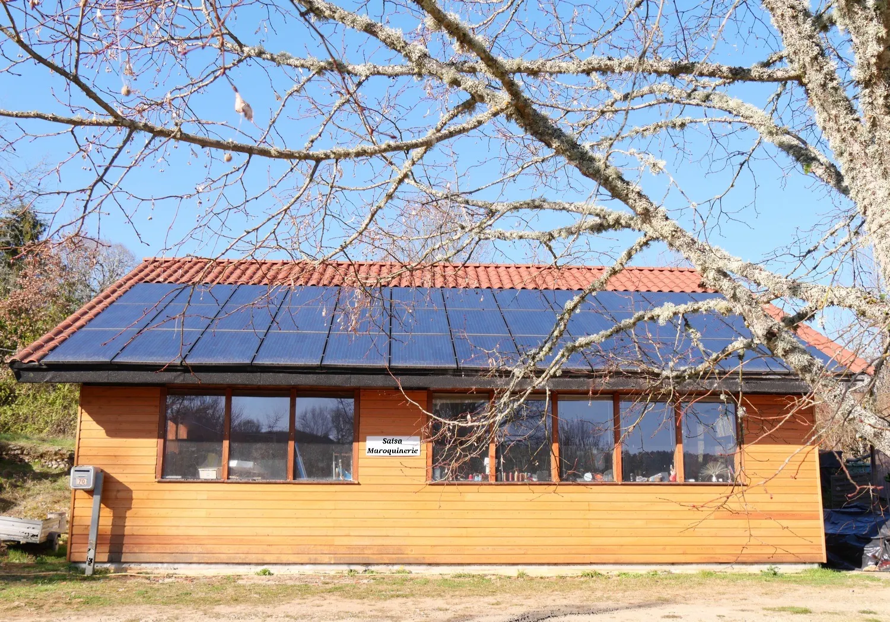
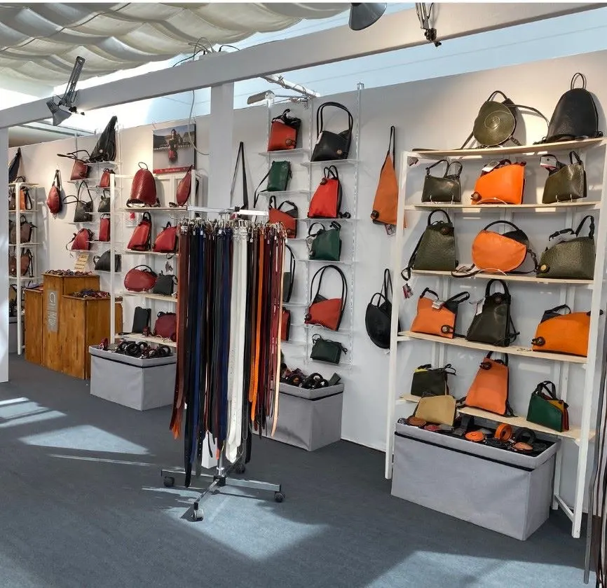

Didier et YohannLe père et le fils, à la découpe
Mauzens et Miremont, en Dordogne
Pour un style décalé, assumé et moderne.
Nous concevons dans notre atelier des sacs, ceintures et accessoires de maroquinerie. Salsa Maroquinerie est un atelier familial : Didier dessine et réalise avec son fils Yohann chaque objet.
- Depuis 1995Salsa Maroquinerie
- Maître artisanDidier Soumah, maroquinier
- Cuirs européensTanneries de France, d'Italie, d'Espagne
- Livraison offertedès 120 € d'achat
Explorez notre collection
Notre volonté est d'allier originalité et fonctionnalité dans des formes contemporaines. Soyez unique avec un sac Salsa Maroquinerie.

Sac à dos Nautile
Le sac Elsa
Le bouton de bois gainéL'originalité de votre sac est soulignée par son bouton et ses associations de cuir.
Coupée, assemblée, cousue dans notre atelier
L'atelier se situe à Mauzens et Miremont, dans le Périgord noir. Pareuse, machines à coudre, emporte-pièces : pour chaque étape de la fabrication, nous avons des gestes précis pour l'utilisation des outils, et pour la façon de tenir le cuir.

La couture du bouton de bois

Le parageLa découpe
Nous choisissons le cuir qui conviendra le mieux au modèle, puis nous le découpons en positionnant le patron créé auparavant, en indiquant où poser fermetures, poche et bouton en bois.
Le parage
Les cuirs sont parés et rempliés, pour travailler des cuirs souples avec la technique de la maroquinerie.
L'assemblage
Sacs et petite maroquinerie sont assemblés par piqûre machine. Les ceintures reçoivent une finition sellier : bords abat-carrés, teint-tranchés, couture décorative.
Nos mains sont nos outils premiers : elles nous permettent de toucher le cuir, de percevoir ses qualités futures, de le maintenir lors du parage, de la couture.
Notre cuir
Votre futur sac sera conçu à partir de cuirs crispés naturels, grainés, imprimés et lisses, provenant de tanneries françaises, italiennes ou espagnoles qui respectent les normes européennes de l'environnement et des personnes.
Nous utilisons des colles et des teints-tranches sans solvant. Les boucles de ceintures, en laiton ou en zamak, sont françaises ou italiennes.

Pour nos ceintures, du collet ou du croupon en tannage végétal. Pour les sacs, les pochettes et la petite maroquinerie, de la bande ou de la peau entière.

L'atelier, à MauzensUn atelier familial, depuis 1995
« Je suis autodidacte. En 1975, je travaillais déjà le cuir selon les techniques de la sellerie-maroquinerie à l'ancienne. Je suis revenu professionnellement à l'artisanat d'art en 1995 avec Salsa Maroquinerie. »
Didier dessine et réalise ses modèles, trouvant son inspiration dans les formes offertes par la nature et la géométrie. L'esthétique de ses collections constitue sa signature distinctive.
- Didier SoumahMaître artisan maroquinier
Créateur de Salsa Maroquinerie.
- Laurence ValdmanConjointe collaboratrice
Céramiste de formation, elle travaille avec Didier depuis 2004 et participe à la fabrication des ceintures.
- Yohann SoumahFormé à l'atelier
Formé en alternance chez Salsa et à Eysines Le Vigean, il participe à la création des modèles.
Ce qu'en disent nos clients
Excellent, sur la base de 7 avis publiés sur Google.
Une réalisation parfaite de mon sac à main sur mesure. Tous mes souhaits ont été respectés.
Les sacs sont magnifiques, originaux, beaux… quant aux ceintures, elles sont indestructibles !
Où nous trouver
Salsa Maroquinerie
70 Passage des Vignes, « Les Granges »
24260 Mauzens et Miremont
- Horaires
- Du lundi au samedi, de 10h à 13h et de 15h à 19h
- Téléphone
- 06 75 25 07 05
Nous pouvons être absents pendant les périodes de salons : n'hésitez pas à nous appeler avant de venir.

Sur les salonsVous nous avez peut-être rencontrés à ARTISA à Grenoble, au salon Créateurs et Artisans d'Art de Toulouse ou aux Ateliers de l'Aiguillerie.
- PaiementCB sécurisée par Stripe, virement, chèque
- LivraisonColissimo, Mondial Relay, gratuite dès 120 €
- Délais4 à 5 jours ouvrés en stock, une semaine de réalisation sinon
- RetourVous avez 14 jours de réflexion